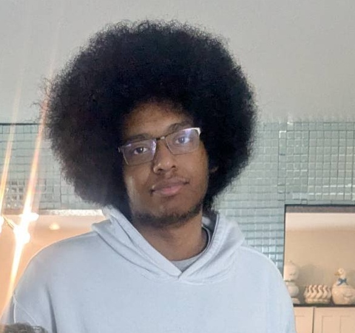

About Me
I am majoring in Creative Technology and Design
I am majoring in Creative Technology and Design
I am passionate about drawing and creating stories and characters through those drawings. The reason why I am so passionate because I was inspired by the media I interacted with, whether that be movies, shows or games.
My goal is to be able to improve and incorporate the skills that I learn this year into my creative work. An example of this is that I want to be able to properly learn about creating websites in order to make my own website with its own style that fits what I want to do.